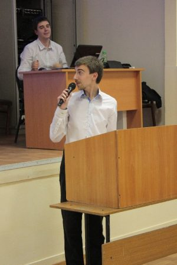
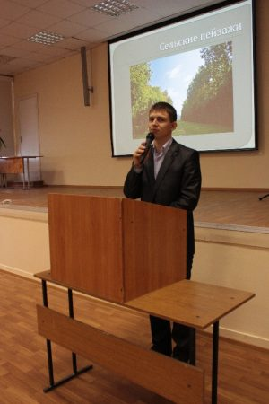

ПЕРВАЯ СТУДЕНЧЕСКАЯ НАУЧНАЯ КОНФЕРЕНЦИЯ ВУЗОВ РОСТОВСКОЙ ОБЛАСТИ ПО ТУРИЗМОВЕДЕНИЮ
Жюри конференции
Ведущая конференции Екатерина Синонян ( 5 курс) – лауреат «Недели науки» ЮФУ 2010 г.:
«Все участники прошли жеребьевку? Тогда, я приглашаю первого докладчика…»
ПЕРВАЯ СТУДЕНЧЕСКАЯ НАУЧНАЯ КОНФЕРЕНЦИЯ
ВУЗОВ РОСТОВСКОЙ ОБЛАСТИ ПО ТУРИЗМОВЕДЕНИЮ
Ростовский государственный университет в 1968 г. положил начало подготовке специалистов для туризма в высших учебных заведениях нашей страны. В этот год приемная комиссия РГУ провела первый в Советском Союзе набор студентов-географов со специализацией «Краеведение, методика и организация туристско-экскурсионного дела» по заочной форме обучения. Через три года специализацию учредили и на стационаре. Появление нового направления в подготовке географов в университете явилось реализацией одной из многочисленных идей, связанных с развитием высшего образования в России, тогдашнего ректора РГУ Юрия Андреевича Жданова.
В настоящее время специализация трансформирована в специальность «Туризм», и по окончании университета студентам присваивается квалификация «Специалист по туризму». Первые дипломы с подобной записью в России вручили своим выпускникам в 2009 г. два вуза – МГУ и ЮФУ. Остальные высшие учебные заведения страны начали выпускать специалистов туризма с 2010 г.
Научное направление, изучающее качество и состояние туристских ресурсов, технологии их использования, влияние туризма на природу и социум, процессы, происходящие в туристской индустрии, получило в России название туризмоведение.
Исследованию различных его сторон и была посвящена Первая студенческая научная конференция вузов Ростовской области, состоявшаяся 16 апреля 2011 г. в актовом зале геолого-географического факультета Южного федерального университета. Инициатором ее проведения стали кафедра общей географии, краеведения и туризма ЮФУ и Ростовское отделение Национальной академии туризма.
В конференции приняли участие студенты пяти вузов Ростовской области, осуществляющих подготовку по специальностям «Туризм» и «Социально-культурный сервис и туризм»: Южного федерального университета, Таганрогского технологического института ЮФУ, Ростовского государственного университета путей сообщения, Ростовского технологического института сервиса и туризма, Южно-Российского государственного университета экономики и сервиса (г. Шахты). Всего было заслушано 19 докладов.
Жюри конференции диплом 1 степени присудило студенту 5 курса ЮФУ (специальность «Туризм») Антону Гольдшмидту за сообщение на тему: «Проблемы развития речных круизов в северо-западном регионе России» ( научные руководители проф. О.В. Ивлиева и доц. Г.П.Долженко). Его работа отвечает всем требованиям, предъявляемым к научным исследованиям. Во время производственной практики Антон работал в качестве менеджера по приему и обслуживанию туристов в 11 круизах Москва – Санкт-Петербург – Москва на речных лайнерах «Княжна Анастасия» и «Николай Карамзин». В них приняло участие более 2,5 тысяч иностранных граждан из ФРГ, Австрии, Швейцарии, Франции, ЮАР, Турции и других стран. А. Гольдшмидт выявил причины, которые мешают нашим круизам получать дальнейшее развитие. Основные из них: бессистемное формирование Мостурфлотом туристских групп; однообразие экскурсионных программ на берегу, связанное с переоценкой роли православных храмов в них; необходимость современных анимационных программ на борту теплоходов и ряд других. Круизная компания Мостурфлот высоко оценила аналитическую работу, проведенную практикантом геолого-географического факультета ЮФУ, будущим специалистом туризма.
Диплом 2 степени присужден Марии Воловик - студентке 4 курса РГУПС (специальность «Социально-культурный сервис и туризм», научный руководитель проф. Д.С. Ушаков). Ее работа была посвящена анализу ситуации, сложившейся в связи с приостановкой деятельности одного из крупнейших многопрофильных туроператоров России «Капитал тур». Воловик поднимает сложные вопросы о механизмах выплаты компенсаций пострадавшим потребителям, о незащищенности турагентов и туристов перед фактом неисполнения туроператором оплаченных услуг.
Дипломом 3 степени был награжден первокурсник ЮФУ Юрий Шевелев за доклад «Особенности развития туризма в сельской местности» (научный руководитель Г.П. Долженко). Являясь сельским жителем и, зная быт селян не понаслышке, он аргументированно возражал некоторым авторам-горожанам различных публикаций о сельском туризме. Шевелев с помощью проведенного анкетирования в родном Песчанокопском показал, что мотивации в выборе туристского отдыха у селян и горожан практически идентичны, желаемые места отдыха одни и те же, программы туров также. То есть убедительно показал, что туризм един для всех.
В летнее каникулярное время Ю. Шевелев планирует заняться организацией туристского отдыха в Песчанокопском с помощью ростовской туристской фирмы «Рейна тур НТВ». Таким образом, его исследовательская деятельность даст начало практической работе.
Презентация трех докладов, совершенно разных по тематикам, отражает разнообразие содержания выступлений студентов всех вузов, которые охватывали огромный спектр комплексного научного направления, каким является туризмоведения.
Представители вузов высказались за необходимость сделать традиционной начатую ЮФУ и РО НАТ областную студенческую конференцию будущих специалистов по туризму.
Г.П. Долженко, О.В. Ивлиева «Известия вузов. Северо-Кавказский регион. Общественные науки». 2011. (в печати).
ДОКЛАДЫ ЛАУРЕАТОВ

Антон Гольдшмидт (диплом 1 степени) за доклад «ПРОБЛЕМЫ РАЗВИТИЯ РЕЧНЫХ КРУИЗОВ В СЕВЕРО-ЗАПАДНОМ РЕГИОНЕ РОССИИ»
ПРОБЛЕМЫ РАЗВИТИЯ РЕЧНЫХ КРУИЗОВ В СЕВЕРО-ЗАПАДНОМ РЕГИОНЕ РОССИИ
Круи́з — в первоначальном значении — морское путешествие. Постепенно это понятие расширилось и приобрело значение — морская или речная туристическая поездка на теплоходе, используемом как средство перевозки, размещения, питания, развлечений и т.д., включающая в программу береговое обслуживание.
Путешествия по рекам и озерам наиболее развиты в государствах, богатых судоходными реками. Речной круизный туризм в наибольшей степени развит в европейских странах (Франция, Германия, Румыния, Венгрия, Италия). Популярны круизные маршруты по Луаре, Рейну, Роне, Сене, Эльбе, Дунаю. За пределами Европы речные круизные маршруты проложены по Нилу (Египет), Янцзы (Китай), реке Святого Лаврентия, Миссисипи (США), Амазонке (Бразилия).
На всех судоходных реках России организованны круизные туристские перевозки. В Европейской части России круизы действуют по водным путям от Финского до Таганрогского заливов. Но лидирующие позиции по числу круизов в нашей стране имеет Северо-Западный регион. Следует отметить, что 80% круизного речного флота сконцентрировано на маршрутах между Москвой и Санкт-Петербургом.
В СССР речные туристские перевозки были впервые организованы в 1959 году на пяти пассажирских судах по реке Волге[1]. Развитие данного вида путешествий шло быстрыми темпами, с каждым годом количество рейсов и пассажиров увеличивалось. Пик развития речной круизный туризм в СССР достиг в середине 80-х годов XX века. После наступления времени перестройки отмечается медленный, но стабильный спад потока внутреннего и въездного туризма.
В летний период 2008 и 2010 годов я проходил производственную практику на круизных теплоходах «Княжна Анастасия» и «Николай Карамзин», где скрупулезно выполнял задание кафедры общей географии, краеведения и туризма Южного федерального университета по изучению
менеджмента речных круизов северо-западной части России, маркетинговой деятельности круизной компании «Мостурфлот», социально-коммуникативных особенностей смешанных круизов с иностранными гражданами.Разрабатывал предложения по улучшению качества сервисной деятельности, новых маркетинговых программ и систем управления персоналом для компании «Мостурфлот».
В итоге, за два сезона работы в качестве менеджера по приёму и обслуживанию туристов, я совершил 11 рейсов Москва – Санкт-Петербург – Москва, в которых приняло участие 2575 иностранных граждан. Среди них 1107 (43%) туристов из ФРГ, Австрии и Швейцарии , 927 (36%) туристов из Франции, 258 (10%) туристов из Великобритании, 283 (11%) туристов из других стран: Италии, Испании, Турции, Израиля, Нидерландов, ЮАР. Средний возраст туристов составлял 50 - 70 лет. Но в каждом рейсе присутствовали пассажиры в возрастной категории от 80 до 90 лет, что требовало более тщательного подхода к обслуживанию.
В процессе производственной практики были выявлены следующие проблемы:
Проблема 1. Отмечаются недостатки в общей маркетинговой деятельности компании «Мостурфлот», которые выражаются в бессистемном неуправляемом подходе к формированию туристских групп и наполнению теплоходов. Это вызывало конфликтные ситуации между туристами различных языковых групп, недовольство и открытую агрессию
Проблема 2. Практически полное отсутствие качественных анимационных программ на борту теплохода, их однотипность и отсутствие необходимых средств для их создания. В качестве аниматоров руководством рассматривались такие же практиканты как я, неподготовленные к проведению анимационной деятельности среди иностранных туристов.
Проблема 3. Большое однообразие экскурсионных программ на берегу. В основном, все экскурсии были связаны с посещением православных храмов, соборов, монастырей и церквей. Обучение на специальности туризм дало мне возможность выявить ошибки в разграничении групп по национальному и, самое важное, религиозному составу. Проблема 4. Проблема состояния экскурсионных объектов, их неудовлетворительное состояние. Особо гнетущее впечатления оставляет известный на всю Россию остров Кижи, где храмы в металлических строительных лесах и металлических латках.
Проблема 5. Кратковременность круизного сезона. По этой причине круизы на российских реках по рентабельности уступают речным круизам по Дунаю, Нилу, Миссисипи.
Проблема 6. Работник круизного теплохода должен знать иностранные языки, чем больше, тем лучше, уметь быстро реагировать и решать проблемы за самый короткий промежуток времени, уметь работать с людьми, знать их менталитет и основы психологии, быть готовым всегда и в любой ситуации помочь как туристу, так и другому работнику. Но, к сожалению, в «Мостурфлоте» не создана система школ качественных и специализированных программ и школ по подготовке персонала, где будущие специалисты могут этому обучиться.
«Спасибо за внимание»
Юрий Шевелев (диплом 3 степени) за доклад «ОСОБЕННОСТИ РАЗВИТИЯ ТУРИЗМА В СЕЛЬСКОЙ МЕСТНОСТИ»
ОСОБЕННОСТИ РАЗВИТИЯ ТУРИЗМА В СЕЛЬСКОЙ МЕСТНОСТИ
Определение сельского туризма весьма условно, потому что он тесно связан:
1) с сельским хозяйством;
2) с агротуризмом;
3) с производством и переработкой сельской продукции, т.е. с деятельностью людей, которые проживают и работают в сельской местности.
Официальное определение следующее:
сельский туризм – это перспективное направление малого туристического бизнеса, основанное на активном отдыхе в сельской местности. (Данное определение дает Международная туристская академия).
Из этого определения следует, что руководящие круги в российском туризме рассматривают «сельский» туризм в качестве организации отдыха городских жителей в сельской местности.
Вот, что пишет вице-президент Международной туристской академии М.Б. Биржаков об организации «сельского» туризма: «Для создания более радушного приёма хозяева могут предложить дополнительные услуги гостям: организация развлекательных мероприятий (баня, совместное хождение на шашлыки, за ягодами и грибами, рыбалка, охота, верховая езда и т.д.), привлечение гостя для помощи в сельскохозяйственных работах, таких как, например, кормление животных, сбор урожая ягод или огурцов, не исключено оказание помощи по сидению с детьми гостей и т.д.»
Все вышеприведенные мысли и идеи — это мысли и идеи городских жителей, которые не знают, да и не могут знать все нюансы и тонкости сельского быта, поэтому предложенные виды деятельности не могут быть реализованы в полной мере. В первую очередь это касается охоты, для её организации необходимо разрешение на ношение оружия и лицензия на проведение охоты в данной местности, оформление всех документов потребует немало времени и материальных вложений, если же проигнорировать требования закона, рекреант, автоматически попадает под уголовную ответственность. Езда на лошади, также не легкий процесс, ведь лошадь непредсказуемое животное, которая может не подпустить к себе незнакомого человека, из-за этого отдых может закончиться трагически. И так можно продолжать до бесконечности по каждому виду деятельности.
В российской научной литературе существует одна статья, её автором является Г.П. Долженко. В этой статье он рассматривает «сельский» туризм с нестандартной точки зрения, т.е. в качестве организации отдыха не сельскими жителями, а для сельских жителей. В качестве примера автор рассматривает деятельность туристской фирмы «Ирина-Тур», которая находится в станице Павловской Краснодарского края. Данная компания в течение нескольких лет успешно работает на туристском рынке и занимается организацией отдыха для жителей станицы Павловской и близлежащих населенных пунктов. На основе деятельности фирмы «Ирина-Тур» было проведено исследование в станице Павловской, направленное на изучение мотивации жителей, их вкусов и предпочтений во время отдыха: время года, место отдыха. Результат исследования показал, что факторы организации отдыха селян в незначительной степени отличаются от горожан.
По итогам исследования в станице Павловской автор вывел некоторые закономерности, при которых может работать туристское агентство в селе:
в сельском населенном пункте может успешно функционировать туристское агентство. Но он, будь то станица или село, и находящиеся вблизи него другие поселения должны иметь общую численность не менее 30 тыс. чел. Это та минимальная критическая масса жителей, которая позволит агентству работать круглый год. Циклы сельскохозяйственных работ не представляют собой определяющего фактора в деятельности туристского агентства. Только период пика уборочной страды не позволяет механизаторам претендовать на отпуск. Устоявшееся мнение, что жители села не имеют возможностей отдыхать в связи с отсутствием свободного времени, опровергается деятельностью агентства «Ирина-Тур», осуществляющей круглогодичную работу. Сельская туристская фирма может быть не только агентом туроператоров города, но и самостоятельно организовывать экскурсионные маршруты, как это делает «Ирина-Тур».
После того, как я ознакомился со статьей Г.П. Долженко, я сразу начал проводить параллели с моим местом жительства, селом Песчанокопским, и сразу же нашел много общего.
Во-первых, у обоих районов сходное географическое положение. Они расположены в трехчасовой доступности друг от друга.
Во-вторых, население Песчанокопского района насчитывает 36 тыс. жителей, это количество способствует открытию туристической фирмы.
В-третьих, уровень благосостояния граждан обоих районов одинаков и заработные платы, также примерно равные.
Я задался проблемой, а может ли в моем селе быть создана туристическая фирма? Мы с моим научным руководителем составили анкету, и мною было проведено анкетирования местных жителей, на предмет исследования мотивов путешествий, предпочтений мест отдыха, продолжительности отдыха и времени года для него.
По данным исследования для 70% респондентов главным мотивом путешествия является просто отдых. Физические нагрузки, являющиеся непременным следствием жизни села, формируют у его обитателей желание избавиться от забот и сменить обстановку. 43% сельских жителей хотят получить возможность вести другой образ жизни – получить высокий уровень обслуживания.
Оптимальными по продолжительности, по мнению 52% респондентов, являются 10-дневные туры, недельные туристские поездки предпочитают 29%, значительно меньшую долю занимают двухнедельные туры - 14%, и отдыху продолжительностью один месяц отдали предпочтение 5% опрашиваемых.
В результате опроса было выявлено, что лето является наилучшем временем года для отдыха, так считают более половины респондентов, 27% выбирают для отдыха зимнее время, в пользу весны и осени высказались 13% населения села Песчанокопского. В первую очередь это обусловлено сельскохозяйственными работами, начинающимися весной и длящимися до середины лета, поэтому вторая половина лета у сельского жителя может быть посвящена отдыху, туристским путешествиям.
Опрос показал, что запросы в путешествиях сельских жителей ни чем не отличаются от запросов городских жителей. Сельские жители хотят отдыхать не меньше городского населения. В связи с большими физическими нагрузками и большей загруженность жителей в селе отдых им может быть больше необходим, чем жителям города.
На основе данных материалов, я намерен работать на открытие туристской фирмы в с. Песчанокопском, первоначально в качестве агента ростовского туроператора «Рейна тур НТВ». На данном этапе уже получено разрешение от руководства компании «Рейна тур НТВ». В дальнейшем есть планы на открытие собственной туристской фирмы, деятельность которой будет направлена на развитие «зеленого» туризма.

НАГРАЖДЕНИЕ
ПОБЕДИТЕЛИ – СВЕТЛЫЕ УМЫ ТУРИЗМОВЕДЕНИЯ.
ПОЗДРАВЛЕНИЕ ПРЕДСЕДАТЕЛЯ РОСТОВСКОГО ОТДЕЛЕНИЯ
НАЦИОНАЛЬНОЙ АКАДЕМИИ ТУРИЗМА Ю.С. ПОНОМАРЕВА
СПЕЦИАЛЬНЫЙ ПРИЗ «СЛОНЕНОК» (символ силы и мудрости) ОТ ГЕНЕРАЛЬНОГО ДИРЕКТОРА ТУРИСТСКОЙ КОМПАНИИ «РОЗОВЫЙ СЛОН» Алексана Мкртчана Антону Гольдшмидту
СЛОВА НАПУТСТВИЯ МОЛОДЫМ УЧЕНЫМ профессора О.В. Ивлиевой
Фотографии предоставил студент 1 курса
специальности «Туризм» Константин Морозов